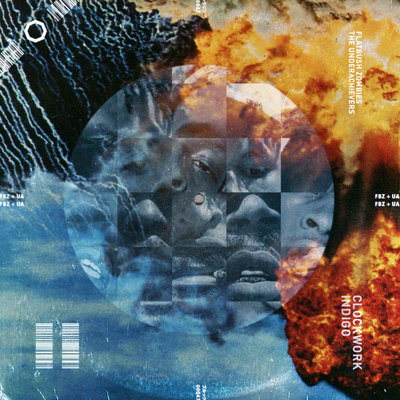
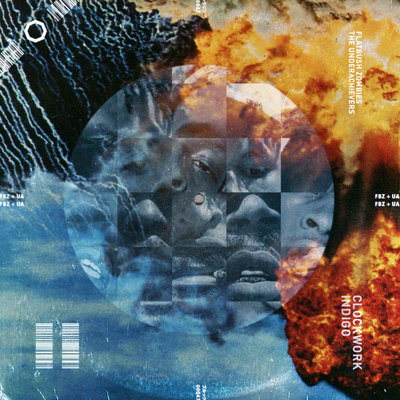

Meechy Darko was born in Flatbush, New York to a Jamaican family.
He befriended future group mates Zombie Juice and Erick Arc Elliott at
a very young age. They bonded over wrestling and other kid activities.
Meech also befriended the rap group that would later be known as The Underachievers.
They bonded while using psychedelic drugs such as LSD and Psilocybin Mushrooms.
This is when Meech would later say he felt that he had experienced ego death
during a shroom trip, inspiring the group name Flatbush Zombies
Meechy Darko top 10 versus!